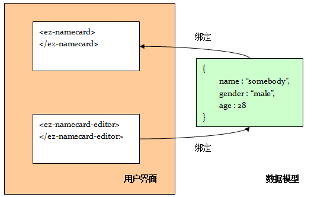

数据变化的传播
重点：数据绑定有两个方向：
1.数据 → 界面：我们使用scope对象的$watch()方法监听数据的变化，来更新界面。
2.界面 → 数据：我们在界面的DOM对象上监听变化事件，来更新数据，并通过$apply()方法传播变化。
示例： 
如图： 1.ez-namecard和ez-namecard-editor都绑定到同一个sb对象上
2.在 ez-namecard-editor上进行编辑，将导致sb对象发生变化
3.由于ez-namecard监听了这个变化， 所以，ez-namecard的显示也应该变化。
事件：$watch()
详细描述：每个scope对象都维护了一个私有的监听队列，
每次当我们在scope上执行一次$watch方法，就相当于 向这个监听队列里塞入一个监听函数。
事件：$apply()
详细描述：为了捕捉对数据的修改，
AngularJS要求开发者使用scope对象的$apply方法对数据进行修改，
$apply方法内部会自动地调用监听队列里的监听函数，
示例：//方法1：直接修改sb对象. 不会自动触发监听函数
scope.sb.name = 'Tonny';
//方法2：使用scope的$apply方法，在数据修改后会自动触发监听函数
scope.$apply("sb.name = 'Tonny'");
//方法3：直接修改sb对象，然后调用$apply方法来传播变化。
scope.sb.name = 'Tonny';
scope.$apply("");
注意：在有些情况下，AngularJS会自动调用$apply方法，比如在初次编译的时候。
使用注意：对数据的变化监听，总是需要通过$apply方法的调用而被激活
如果 AngularJS没有获得一个机会来调用$apply，就需要你手工的调用它。